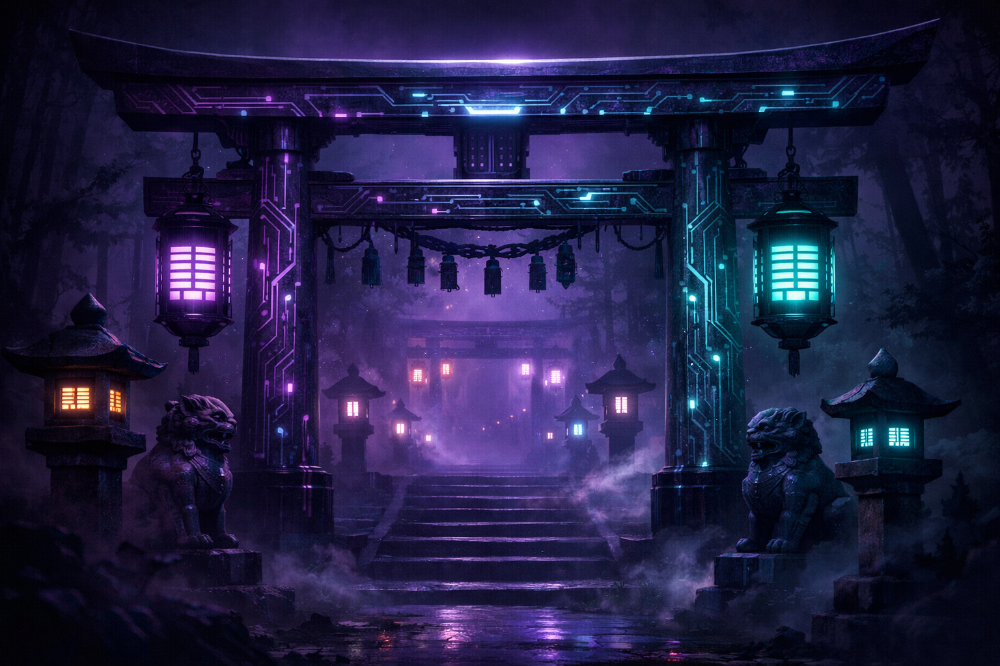
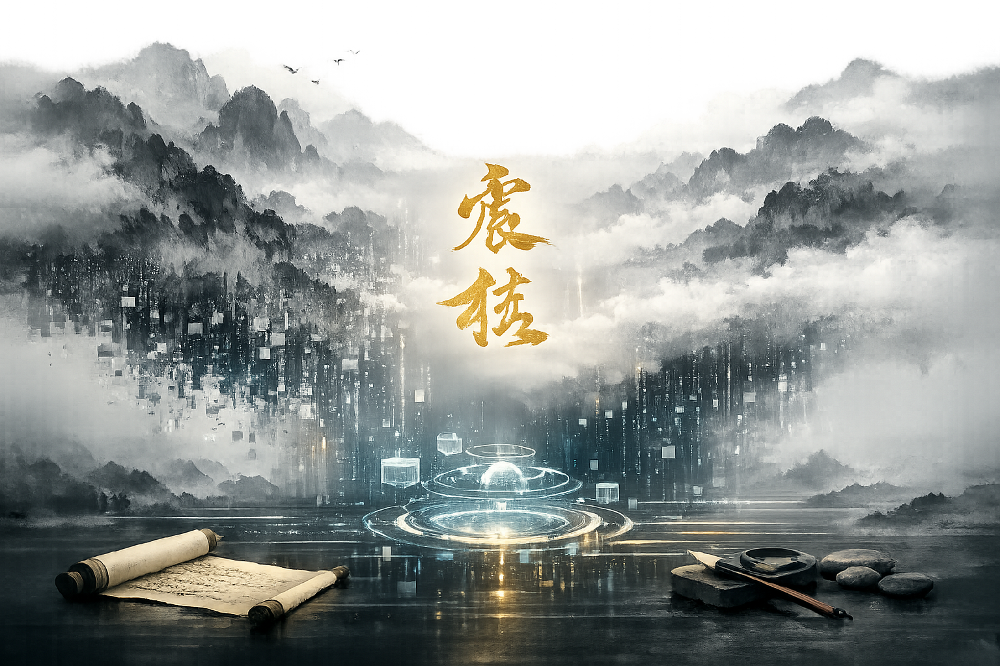
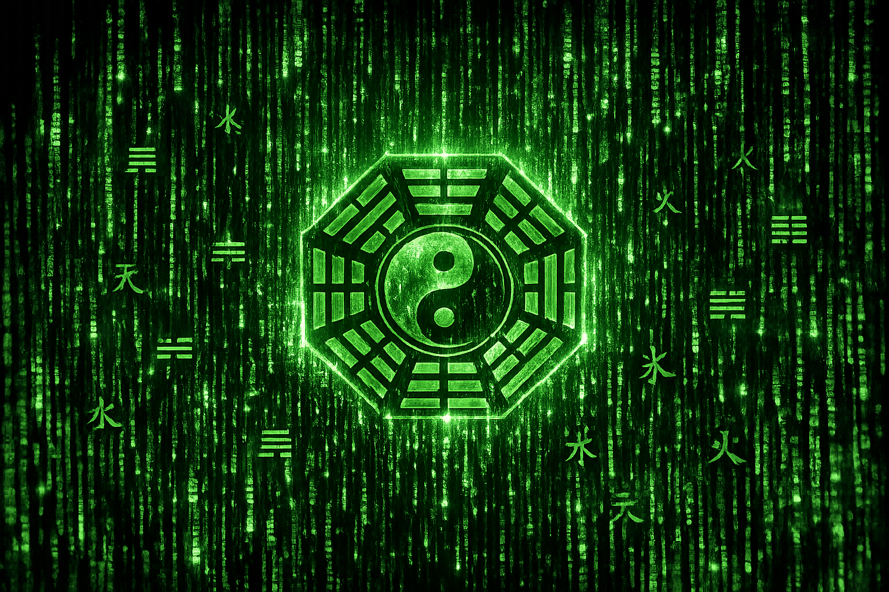
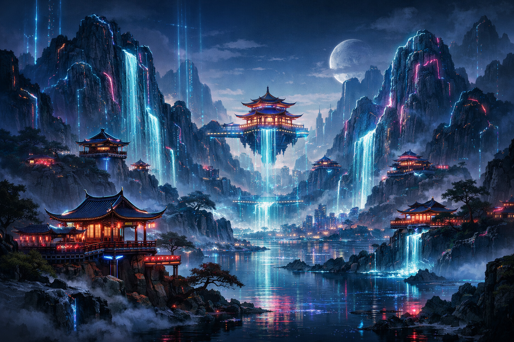

openai-image-gen

CyberFate fortune telling app homepage - CYBER SHRINE: Neon-lit Japanese torii gate fused with circuit board patterns, glowing purple and cyan lights, traditional lanterns with digital I-Ching hexagrams, foggy depth, cyberpunk eastern spirituality, dark moody, no text no watermark

CyberFate fortune telling app homepage - INK TECH: Traditional Chinese ink wash mountain landscape dissolving into digital particles and data streams, gold calligraphy floating in misty void, ancient scroll meets holographic elements, minimalist zen, no text no watermark
CyberFate fortune telling app homepage - HOLOGRAPHIC DESTINY: Iron Man style holographic interface with rotating 3D Bagua symbol, glowing blue projection lines, floating Chinese characters as data points, dark command center, futuristic UI, no text no watermark

CyberFate fortune telling app homepage - DARK ARCANA: Gothic tarot design with ornate gold filigree frames, mysterious eye of providence with Yin-Yang center, deep purple velvet background, occult symbols, luxurious dark academia, no text no watermark

CyberFate fortune telling app homepage - EASTERN MATRIX: Matrix falling code rain with I-Ching trigrams and Chinese characters, green phosphor glow on black, Bagua symbol emerging from data stream, cyberpunk oriental hacker aesthetic, no text no watermark
CyberFate fortune telling app homepage - ZEN MINIMAL: Pure black background with single floating golden Yin-Yang symbol emitting subtle glow, extreme minimalism, particle dust, massive negative space, ultra-premium luxury, no text no watermark
CyberFate fortune telling app homepage - MYSTIC MIST: Ethereal clouds with golden light rays piercing darkness, silhouette of Chinese pagoda in fog, floating fortune sticks with glowing tips, volumetric lighting, dreamlike spiritual, no text no watermark
CyberFate fortune telling app homepage - CLOCKWORK BAGUA: Steampunk mechanical Bagua with brass gears copper pipes steam vents, Victorian machinery, warm amber lighting, industrial mysticism, vintage tech ancient wisdom, no text no watermark

CyberFate fortune telling app homepage - DIGITAL SHANSHUI: Cyberpunk Chinese landscape painting, neon-outlined mountains, holographic waterfalls, floating pavilions with LED, Song dynasty meets Blade Runner, epic scale, no text no watermark
{kind=link}
{kind=link}
{kind=link}
{kind=link}
{kind=link}
{kind=link}
{kind=link}
{kind=link}